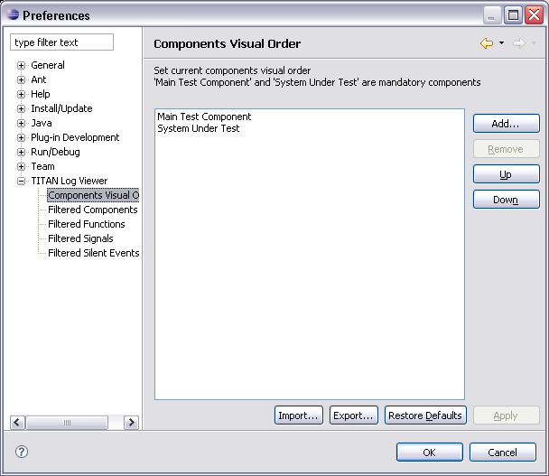

Configuration of the order in which the components will be displayed
in the message sequence chart.
The components are viewed in descending order. The user can change the order
of the components, using up and down, add new component name to the list and
remove an existing component name from the list. The name of the component must
be entered case-sensitive, e.g. exact match the component name in the log file.
The component names are not validated.

Button |
Description |
Add... |
Opens a input dialog where the user enters the name of the component that should be added to the list. |
Remove |
Removes the selected component from the list |
Up |
The selected component is moved up in the list. |
Down |
The selected component is moved down in the list. |
Restore Defaults |
Restores the settings to default. The default setting is a list only including Main Test Component and System Under Test . |